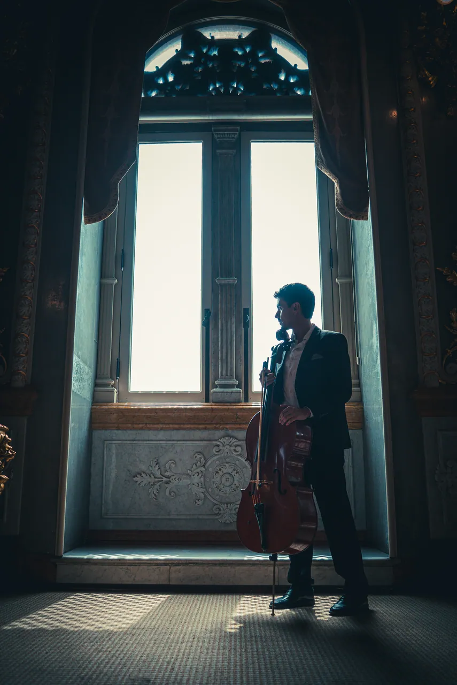
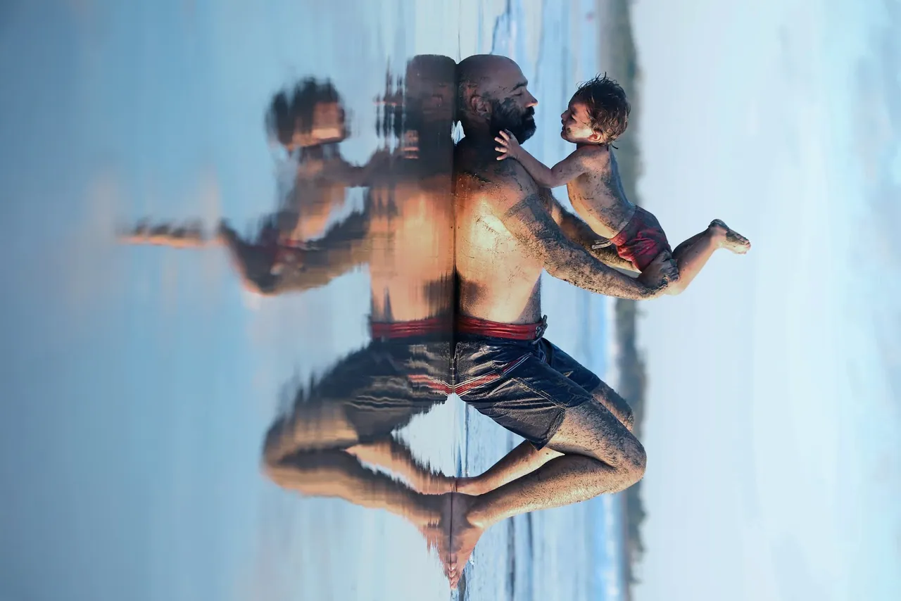

-
01
Live music & toursPhoto and video for concerts, tours and festivals.
-
02
 Film & videoDirection, cinematography and editing for shorts, music videos and social media content.
Film & videoDirection, cinematography and editing for shorts, music videos and social media content.
-
03
 Performing artsTheatre and dance photography (poster, rehearsal, performance) and stage direction.
Performing artsTheatre and dance photography (poster, rehearsal, performance) and stage direction.
-
04
 Brands & eventsPhoto and video for events, spaces and campaigns.
Brands & eventsPhoto and video for events, spaces and campaigns.
Have a project in mind? Let's talk.
clients
People I have worked with


- Hernán Jiménez